ЯПОНСКИЙТАТИНОМИ-БАР
МОСКВА. СТРАСТНОЙ БУЛЬВАР, 7С3立ち飲みСВОРАЧИВАЙ ВО ДВОР
ТЕБУРАСИбар, в который заходят к своим
Снаружи — Москва.
Во дворе — свой Токио.
Горячая лапша, холодное саке и разговоры
под светом японских фонарей. Ты заходи.
Токио? Почти.Наш маленький переулок на Страстном
В тесноте,
да не в обиде.
Татиноми — это когда стоя у стойки,
по закуске на всех и ещё по одной.
立ち
ТАТИстоять
+飲みНОМИпить
Такие маленькие бары прячутся в переулках Японии. В них забегают после работы, знакомятся с соседями и незаметно остаются на весь вечер.
У нас эта история живёт в московском дворе. Кухня открыта, фонари горят, из колонок — сити-поп. Заходи за раменом, оставайся ради компании.
Покажите, где этоУ нас во двореЗашли на час.
еда · музыка · людиЗашли на час.
Остались
до закрытия.
Фирменные коктейли в банках, саке
и музыка, под которую остаются.
У каждого вечера — своя компания.
всё, что нужно
На свет
фонарей.
Москва, Страстной бульвар,
дом 7, строение 3
Время хороших встреч
+7 (969) 125-40-00 - Пн — Чт
- 15:00 — 00:00
- Пятница
- 15:00 — 02:00
- Суббота
- 14:00 — 02:00
- Воскресенье
- 14:00 — 00:00
Три шага —
и ты среди своих.
и ты среди своих.
- 1
От метро — к Театру мюзикла
- 2
По Страстному — к дому 7, затем во двор
- 3
Наши фонари — у строения 3